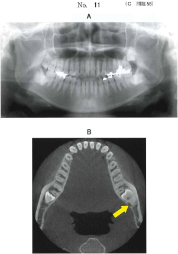
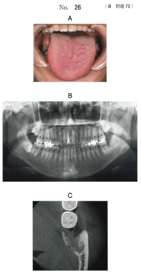
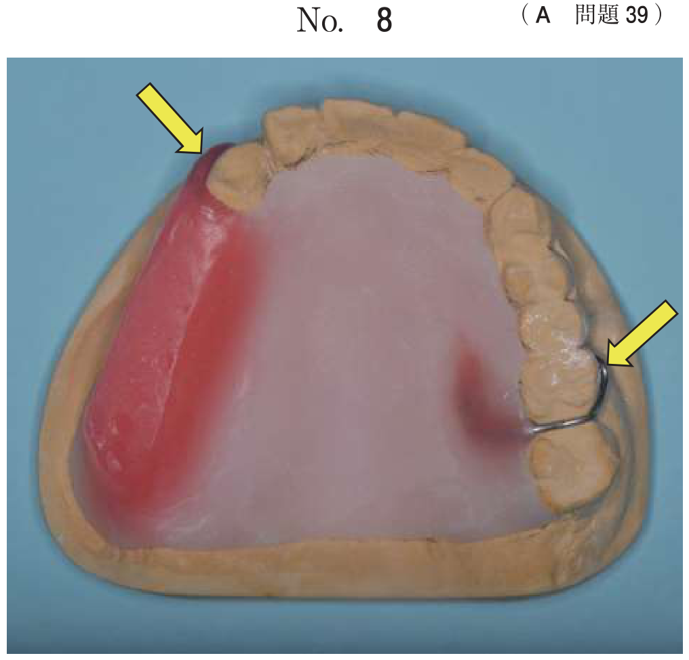
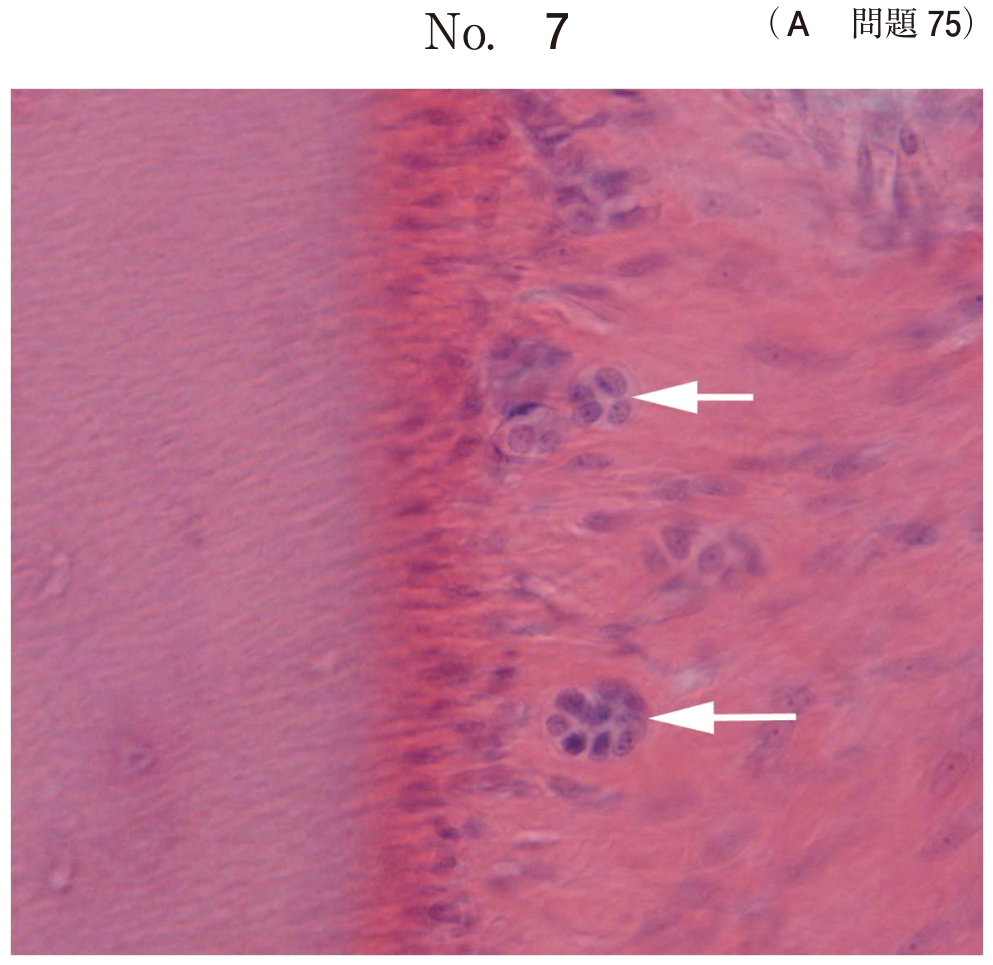

抜歯の偶発症
全身的偶発症
| 偶発症 | 原因 | 症状 | 対応 |
|---|---|---|---|
| 局所麻酔薬中毒 | 局所麻酔薬の血管内注入、過量投与、高濃度麻酔薬の使用 | 興奮→不安感→嘔吐→呼吸抑制→徐脈→血圧低下→意識消失 | 吸引操作中止、酸素投与、静脈路確保、抗痙攣薬（ジアゼパム） |
| アナフィラキシーショック | 麻酔薬・添加物に対するアレルギー反応（エステル型に多い） | 蕁麻疹、喉頭浮腫、呼吸困難、血圧低下 | アドレナリン筋注（0.01mg/kg）、酸素投与、輸液 |
| 神経原性ショック （脳貧血） |
不安・恐怖・疼痛→迷走神経反射→末梢血管拡張 | 顔面蒼白、冷汗、四肢の無力感、徐脈、血圧低下 | 頭低位（Trendelenburg体位）、下肢挙上、衣服を緩める |
神経原性ショックが最も頻度の高い全身的偶発症である。
局所的偶発症
1. 神経損傷 ★★★最頻出
下顎埋伏智歯が下顎管に近接する場合や、舌側骨を操作する際に発生する。
- 下歯槽神経：下顎管内を走行。損傷すると同側の下唇・オトガイ部の感覚麻痺、下顎前歯部唇側歯肉の感覚異常
- 舌神経：下顎智歯の舌側を走行。損傷すると同側の舌前2/3の感覚麻痺と味覚障害
神経損傷の検査
| 検査 | 内容 | 評価対象 |
|---|---|---|
| SWテスト （Semmes-Weinstein） | 太さの異なるモノフィラメントで触覚閾値を測定 | 触覚・圧覚 |
| 濾紙ディスク法 | 味覚溶液を浸した濾紙を舌に置いて味覚を評価 | 味覚 |
| 二点識別覚検査 | 2点の刺激を識別できる最小距離を測定 | 触覚の精度 |
知覚異常は数か月〜1年以内に回復する場合が多いが、永続する場合もある。ビタミンB12製剤の投与、星状神経節ブロックなどが行われる。
損傷される神経と症状の整理
| 神経 | 損傷で生じる症状 |
|---|---|
| 下歯槽神経 | 下唇・オトガイ部の感覚麻痺、下顎前歯部唇側歯肉の感覚異常、損傷部位からの出血 |
| 舌神経 | 舌前2/3の感覚麻痺、味覚障害（鼓索神経線維を含むため） |
舌咽神経・舌下神経・顔面神経下顎縁枝は下顎智歯抜歯では通常損傷しない
2. 皮下気腫（気腫） ★★
エアシリンジやエアータービンから出る空気が、組織腔内に入ることで発生する。下顎智歯の歯冠分割時にエアータービンを使用した際に多い。
皮下気腫の特徴
- 抜歯中〜直後に顎下部〜頸部のびまん性腫脹が急速に出現
- 触診で捻髪音（雪を握るような感触）を触知
- キュッキュッまたはパチパチという異常音を発する
- 気腫は数日で自然に組織内に吸収されて消退する
皮下気腫への対応
- バイタルサインの確認（縦隔への進展の有無を評価）
- 抗菌薬投与（口腔内細菌が組織腔内に送り込まれるため感染予防）
- 経過観察（通常は数日で自然消退）
- 頬部圧迫は不要（気腫の治療としては無効）
3. 上顎洞穿孔と歯の迷入
上顎臼歯、とくに上顎第一大臼歯の口蓋根は上顎洞底に近接しており、抜歯時に穿孔や歯根迷入が起こりうる。
上顎洞穿孔
- 穿孔が小さい場合（5mm以下）：自然閉鎖が期待できる → 肉芽に置換して閉鎖
- 穿孔が大きい場合：即時閉鎖（頬粘膜弁法による上顎洞瘻孔の閉鎖術）
- 副鼻腔炎の合併：消炎後に閉鎖手術
上顎洞への歯根迷入
- 術前にエックス線・CT検査でその位置や深さを確認
- 上顎洞前壁の骨を削除し、洞粘膜も剥離して洞内を直視しながら迷入歯根をピンセットで摘出
- 迷入歯を放置すると組織障害を生じるため、必ず摘出
4. ドライソケット
- 抜歯後の術後疼痛は急性骨膜骨髄炎とドライソケット
- 抜歯窩の血餅が崩壊し骨面が露出した状態
- 抜歯後2〜3日後から強い持続痛、悪臭
- 処置：洗浄、抗菌薬含有軟膏ガーゼの填入、鎮痛薬
5. その他の局所的偶発症
| 偶発症 | 内容 |
|---|---|
| 異常出血 | 炎症性出血、全身的出血性素因。局所止血（圧迫・縫合・止血材填入）で対応 |
| 歯槽骨骨折 | 抜歯時に高頻度。遊離した破折片は原則的に除去。骨膜と接着している場合は抜歯創を縫合して安静に保つ |
| 誤抜歯 | 術者の間違い。隣在歯の歯根膜空間に挺子を挿入してしまう |
| 口腔軟組織損傷 | 挺子の滑脱、タービンエンジンで粘膜弁を巻き込むなど |
過去問で確認
下顎水平埋伏智歯を抜去するときに、損傷に注意すべきなのはどれか。2つ選べ。
b 舌咽神経
c 舌下神経
d 下歯槽神経
e 顔面神経下顎縁枝
【解説】下顎埋伏智歯の抜歯で損傷に注意すべきは、下顎管内を走行する下歯槽神経（d）と、下顎智歯の舌側を走行する舌神経（a）。舌咽神経（b）は咽頭、舌下神経（c）は舌筋の運動神経であり、智歯抜歯では通常損傷しない。顔面神経下顎縁枝（e）は下顎骨下縁の外側を走行し、通常の口腔内からの抜歯では損傷しない。
下顎左側智歯の抜去を予定している患者のエックス線画像（別冊No.11A）とCT（別冊No.11B）を別に示す。 矢印で示す構造を損傷すると同側に生じる可能性が高いのはどれか。2つ選べ。

b 下唇の運動障害
c 頬粘膜の感覚異常
d 損傷部位からの出血
e 下顎前歯部唇側歯肉の感覚異常
【解説】矢印は下顎管（下歯槽神経・動静脈）を示す。下歯槽神経を損傷すると同側の下唇・オトガイ部・下顎前歯部唇側歯肉の感覚異常（e）が生じる。また、下歯槽動脈を損傷すると損傷部位からの出血（d）が起こる。舌の味覚障害（a）は舌神経損傷、下唇の運動障害（b）は顔面神経損傷で生じるもの。頬粘膜の感覚異常（c）は頬神経の支配領域。
34歳の女性。舌の知覚麻痺を主訴として来院した。1か月前に他院で下顎左側第三大臼歯を抜去後から自覚し、その後改善しないという。初診時の舌の写真（別冊No.26A）、エックス線画像（別冊No.26B）及び「8の歯科用コーンビームCT（別冊No.26C）を別に示す。 行うべきなのはどれか。2つ選べ。

b Schirmer試験
c 濾紙ディスク法
d ドプラ超音波検査
e ブローイング検査
【解説】下顎智歯抜歯後の舌の知覚麻痺は舌神経損傷を示唆する。舌神経は感覚と味覚（鼓索神経線維）を伝えるため、触覚の評価にSWテスト（a）、味覚の評価に濾紙ディスク法（c）を行う。Schirmer試験（b）は涙液分泌検査、ドプラ超音波検査（d）は血流検査、ブローイング検査（e）は鼻咽腔閉鎖機能の検査であり、舌の知覚麻痺の評価には不適。
23歳の男性。下顎左側水平埋伏智歯の抜去中に、左側顎下部から頸部にかけて疼痛と急激なび漫性の腫脹とを認めた。 考えられる原因はどれか。1つ選べ。
b エアータービンによる歯の分割
c 抜歯挺子の滑脱
d 舌側歯槽骨の骨折
e 生理食塩液による強圧洗浄
【解説】抜歯中の急激なびまん性腫脹は皮下気腫を示す。エアータービンによる歯の分割（b）で発生する圧縮空気が、骨膜下や組織腔内に侵入して気腫を引き起こす。触診で捻髪音を触知する。粘膜骨膜弁形成（a）、挺子の滑脱（c）、舌側骨折（d）、生食洗浄（e）では急激なびまん性腫脹は通常起こらない。
40歳の女性。左側頬部の腫脹を主訴として来院した。30分前にかかりつけ歯科医で下顎左側埋伏智歯の抜去直後から腫脹が出現したため、紹介された。初診時の顔貌写真（別冊No.18A）、CT（別冊No.18B）及び抜歯前のエックス線画像（別冊No.18C）を別に示す。 適切な対応はどれか。2つ選べ。


b 抗菌薬投与
c 抗ヒスタミン薬投与
d アドレナリン筋肉注射
e バイタルサインの確認
【解説】抜歯直後の急速な頬部腫脹で、CTで組織内に空気が確認されれば皮下気腫と診断される。対応として、口腔内細菌が組織腔内に送り込まれているため抗菌薬投与（b）で感染予防を行い、縦隔への気腫波及の危険性があるためバイタルサインの確認（e）を行う。頬部圧迫（a）は気腫には無効。抗ヒスタミン薬（c）やアドレナリン筋注（d）はアレルギー反応への対応であり、気腫には不適。
30歳の男性。上顎左側智歯周囲炎で抜歯することとした。初診時のエックス線写真（別冊No.13）を別に示す。 抜歯の際に留意すべき合併症はどれか。2つ選べ。

b 上顎洞穿孔
c 顔面神経麻痺
d 鼻口蓋動脈損傷
e 眼窩下神経麻痺
【解説】上顎智歯は上顎洞底に近接していることが多く、抜歯時に上顎洞穿孔（b）や上顎洞内への歯の迷入（a）のリスクがある。顔面神経麻痺（c）、鼻口蓋動脈損傷（d）、眼窩下神経麻痺（e）は上顎智歯抜歯の偶発症としては考えにくい。